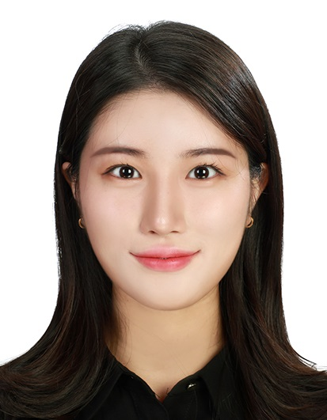

Introduction
Hi, I am Sooyon Seo from South Korea.
I am currently pursuing a Ph.D. degree in Immersive Media Engineering at Sungkyunkwan University(SKKU), Seoul, Republic of Korea, and is researching at SWLab led by Prof. Moohong Min.
My research interests include generative artificial intelligence, cybersecurity, and illegal online gambling.
Education
2023.08 ~ Present : Integrated M.S./Ph.D degree in Immersive Media Engineering @SKKU
2020.03 ~ 2023.08 : B.S. degree in Global Business Administration (Early Graduated as the Top Student in College) @SKKU
2022.08 : International Summer School @Southern Denmark University, Odense, Denmark
2017.03 ~ 2020.02 : High School Diploma in German Language @Daewon Foreign Language High School, Seoul
Conferences & Publications
A Study on the Frequency and Pattern Analysis of Spam Messages
- June 2024 | Jeju, South Korea
- Sooyon Seo, Minseok Hur, Jaeho Hwang, Jiwon Jang, Jiho Shin, Moohong Min
Korea Computer Congress(KCC) 2024
An Approach to Detect Illegal Online Gambling Using Generative AI
- Dec 2023 | Okinawa, Japan
- Sooyon Seo, Jaeho Hwang, Moohong Min
The 7th International Conference on Mobile Internet Security(MobiSec 2023)
An Approach to Detect SMS Spam Using ChatGPT
- June 2023 | Fukuoka, Japan
- Sooyon Seo, Jaeho Hwang, Moohong Min
The 18th Asia Pacific International Conference on Information Science and Technology(APIC-IST 2023)
Experience
Researcher(Full-time) | SKKU, Seoul
- @SWLab led by Prof. Moohong Min
- Main Research Fields: Generative AI, Cybersecurity, Illegal Online Gambling, Spam Detection
- Research Assistant from July 2022 ~ Aug 2023
Aug 2023 ~ Present
Teaching Assistant | SKKU, Seoul
- Currently assisting AI Basics & Application course
- Assisted 'Computational Thinking & SW Coding' and 'Problem Solving & Algorithm' courses (Programming Language: Python)
- Managing and organizing the course with the professor
- Dealing with students' questions regarding Python and course assignments
Mar 2022 ~ Present
Strategy Intern | ForSpaceLab Inc., Seoul
- @ForSpaceLab Inc., a business data analyzing start-up company
- HR: managed crew evaluation & reward process and organized company culture & core values
- supported other management needs such as legal contract review and arrangement of various documents
Dec 2022 ~ Feb 2023
SKKU Weekly Newspaper Journalist | SKKU, Seoul
- Head of the Photo Department and a member of Sports Team
- Article portfolio and Seoul Shinmun articles 1) & 2)
Sep 2020 ~ Feb 2022
Samsung Dream Class Tutor | Samsung Foundation, Seoul
- Volunteered to teach middle school students in need and guided them to set their career direction
- Experienced online education program utilizing various teaching materials
Sep 2021 ~ Feb 2022
Awards & Certificates
- Best Excellence Award
- Case Competition - Generative AI Chatbot in Security
- Issued by Korea Internet & Security Agency
- Dean's Award for Academic Excellence/ First Class Honors
- Awarded for being a model for others with the best academic performance while enrolled in the undergraduate course
- Issued by SKK Business School
- Summa Cum Laude
- The highest academic award designated for students in 5% of the class 2023
- Issued by SKK Business School
- Dean's List
- Fall & Spring 2022, Fall 2021, Fall & Spring 2020
- Recognition of Honorable Academic Achievement
- Issued by SKK Business School
- The Next Century Humanities Scholarship
- Full Scholarship for 2 years(4 semesters)
- National scholarship for undergraduates in humanities and social sciences who have demonstrated their potentials to be the leaders in those fields
- Issued by Ministry of Education
- SKKU Academic Excellence Scholarship
- Received full scholarship for Fall 2020 & Spring 2021
- For being one of the Top 3 GBA students who achieved academic excellence
- Issued by SKK Business School
- German Reciting Contest
- 8 Finalist
- Issued by Goethe Institute
- Zertifikat Deutsch(Goethe-German Certificate): B1